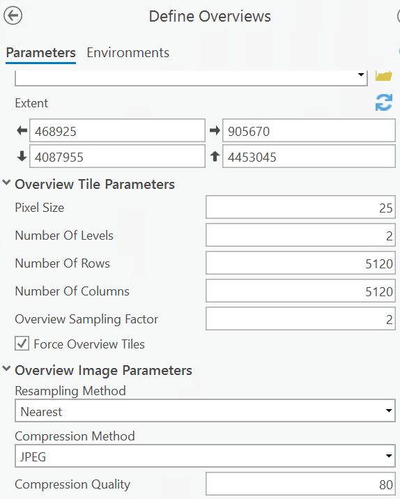
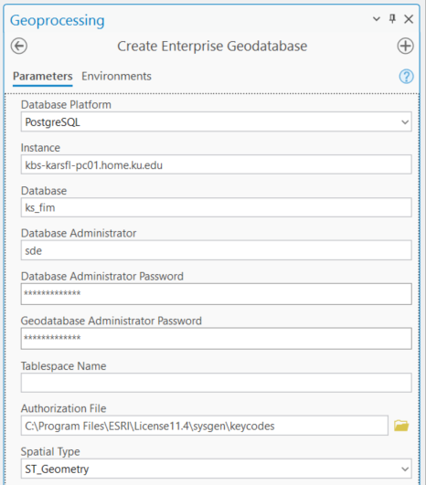
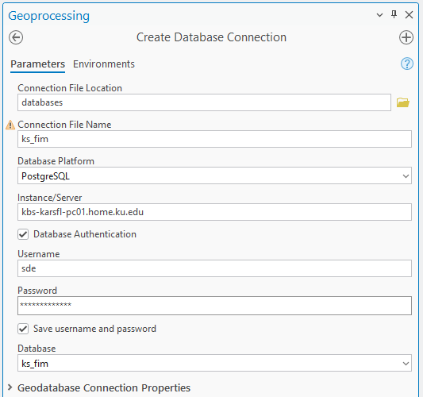

6. Serve Flood Maps#
The flood maps (both stream and reservoir flood depth raster data) should be made available to not only the researchers and state division of emergency management but also the general public on the web. In this context, “Serving flood maps” has several options:
Serve the maps as raster data. Make the data discoverable and available/downloadable on the web. The SpatioTemporal Asset Catalogs (STAC) interface can be used for this. This requires the user to download the data and has the software (ArcGIS or QGIS) and ability to visualize and explore the data.
Serve the data as maps. The original raster data are visualized as RGB images. The user can see the maps directly in a web browser or using the software that user is familiar with and can consume the maps such as ArcGIS or QGIS.
Serve some analysis capabilities on the maps. The user can request certain analysis/manipulation on the data.
Ideally, a good service is to provide all the options above and let the user choose the best option for their needs. The maps can be served either an on-premise or cloud web server using commercial GIS server (such as ArcGIS Server with map and image services) or open source geospatial server software.
The Kansas flood maps are currently served on an on-premise ArcGIS Server at KU. But exploration has also been done serving the flood maps as cloud-optimized geoTiff (COG) on Azure Blob storage and using a tiler to visualize them.
6.1. Create an ArcGIS-fldpln python environment#
For the KFIM system, both the fldpln Python package and ArcGIS Python packages are needed. For example, reservoir inundation mapping (fim_reservoir.py) uses both arcpy and fldpln package. As such we created a python environment arcgispro-py3-fldpln with the following steps:
Clone an ArcGIS Pro python environment to user’s (in this case user “fldpln”) Python environments
conda create --clone "C:\Program Files\ArcGIS\Pro\bin\Python\envs\arcgispro-py3" -p "C:\Users\fldpln\miniconda3\envs\arcgispro-py3-fldpln"
Activate the cloned environment
conda activate arcgispro-py3-fldpln
Install the fldpln package in the cloned environment
pip install fldpln
Install psycopg2, which is not included in both packages, but needed for PostgreSQL database connection
pip install psycopg2
6.2. Serving/Visualizing Big Raster Data#
For big raster data, if the data is stored as a single file, there are typically two ways to serve the data:
Pre-tile at different levels (pyramid) and serve the tiles at different levels for display and analysis. This approach is also good for analyzing the data at different spatial resolutions in parallel, and the GEE platform uses this approach.
Through dynamic tiling (see Vincent Sarago’s titiler and articles on why dynamic tiling might be better). This approach is good for displaying data especially the data are saved as COG which is compressed and has pyramids.
If the big raster data are already tiled, as in the case of flood maps, it is possible to serve the data as a single raster. In ArcGIS, this is done through the mosaic dataset which can be displayed in ArcGIS Pro or served as an image service in ArcGIS Server.
6.3. Using Tilers (localtileserve and titiler)#
Localtileserver is a local tile server for viewing local or remote large geospatial images with ipyleaflet or folium in Jupyter.
See Qiusheng leafmap #32 notebook example and VizUseLocaltileserver notebook
No issue when running it locally (office desktop)
Installed localtileserver on PC. But it didn’t work initially when use leafmap to display COGs. Qiusheng had to fix a bug and to added a new method Map.add_geotiff() in v0.7.7.
Localtileserver can render both local and remote GeoTIFF file, though remote file should be COG.
All the viewers (leaflet, folium and leafmap) can display both local and remote files but folium is 2 times faster than leafmap
For leafmap, Map.add_local_tile() and add_geotiff() both use localtileserver. As such, both methods can view local or remote GeoTIFF files. It’s however unclear what the difference between the two methods.
TiTiler uses dynamic tiling instead of pre-tiled raster by taking the advantages of COG GeoTIFF, which has overview and pyramids.
We can create a tilier endpoint on our server or use the one at https://titiler.xyz which is set up by DevelopmentSeed but available for anyone to use.
For tiled COG files, titiler also supports mosaic layer using the mosaicjson API. We found that using tiles and mosaicjson API is faster than a single COG file. This also avoids the process of mosaicing tile COGs into one big COG, which is a bottle neck problem in flood mapping process.
PC has its own tiTiler server but only works with the datasets in its STAC Catalog. See Qiusheng leafmap #37 notebook. It seems the endpoint (PgSTAC Mosaic endpoints) can handle mosaic COGs. However, our flood map tiles may not be ingested into PC’s Catalog!
For serving flood maps using open source software, we may need to create a titiler server (that supports mosaic endpoint just like PC) running on our server.See titiler doc and related security/token issue.
The maps served by the tilers can be displayed/consumed by several viewers (ipyleaflet, folium, leafmap):
All the viewers can display both local and remote files but folium is 2 times faster than leafmap
Leafmap is a general map display component which has a better GUI and easy to use compared with leaflet and folium.
For leafmap, Map.add_local_tile() and add_geotiff() both use localtileserver. As such, both methods can view local or remote GeoTIFF files. It’s however unclear what the difference between the two methods.
There are several options to build a web application using the tilers and viewers:
Use voila to turn a Python notebook into a web application (similar to the TrendySnow app)
Use streamlit to create a web application which has much more flexibility than notebook+ voila approach
One challenge to turn flood maps into a web application is that the maps updated frequently (hourly for the dashboard). The web application may have strange experience when displaying the maps which they are updated. In the current implementation, the stream flood map (tile COGs files) are first generated in a new folder, and the mosaic dataset is then swapped to the new folder. This swapping takes some time and may cause the web application to have a weird experience.
6.4. Issues in Generating Flood COG Tile Files#
There are still bugs in creating blob tile COGs and mosaic tile COGs
Code for saving tile files as COGs is based on this example
cog_translate() still have some warning like “IncompatibleBlockRasterSize: Block Size are bigger than raster sizes”. Need to know more about other parameters when create COG (compression methods, pyramids/overview, …)
Somehow, the spring COG file (spring_NumOfFsps.tif) generated by MosaicGtifsBlob() and the COG file (spring_NumOfFsps_COG.tif) generated by MosaciGtifs() have different size (see them in the maps container)!
Still unable to install cogeo-mosaic into fldpln2 env, which is used to generate a MosaicJSON file for library tiles!
FutureWarning: The frame.append method is deprecated and will be removed from pandas in a future version. Use pandas.concat instead
6.5. Fundamentals of Map Services#
Understand the difference between various map services (for example, image and map services) in ArcGIS and OGC, and how to serve them on a web server.
PSU online courses on web mapping applications
PSU GEOG865 Cloud and Server GIS (ArcGIS Server)
PSU GEOG585 Open Web Mapping
6.6. Serve Flood Maps on ArcGIS Server#
ArcGIS Server is one of the options to serve flood maps. ArcGIS mosaic dataset is used to visualize flood map tiles of COG files. The other options include serve the maps using tile server on the KBS server or on the cloud (such Microsoft Planetary Computer’s Blob storage).
This section describes how to serve flood mapping on an on-premise server using ArcGIS Server.
The KARS server at KU Computer Center is divided into two identical virtual machines (test & production servers), each has 8 cores and 192G RAM. The names for the servers are itprdkarsap.home.ku.edu and ittstkarsap.home.ku.edu respectively.
The services published on the KBS ArcGIS server can be accessed by adding the server in ArcGIS Pro in the Catlog\Servers\New ArcGIS Server Connection.
6.6.1. The overall process#
The mapping script generates a flood depth raster for each library tile as a COG-Tif file (need to confirm it’s a COG tif). Those tif files may have pyramids in them already (is this controlled in the mapping script?).
Those tif files are used to create an ArcGIS mosaic dataset. The mosaic dataset needs overviews (i.e., pyramids for mosaic dataset) to speed up the display when it is served as a web service.
The mosaic dataset is then used to create ArcGIS Image Service (and/or WMS and WCS) to make the data available to the web.
6.6.2. Mosaic Dataset#
The general steps of manually creating a mosaic dataset from a flood map using ArcGIS Pro include:
Create a new mosaic dataset in the Catolog tab
In Geoprocessing tab, search for “Set mosaic dataset properties”. Using the tool to set mosaic operator. For mindtf, this should be set as minimum but for flood depth, this should be maximum
Add rasters to the mosaic dataset (check Calculate Statistics and Build Overviews to speed up visualizing the data). what’s the difference between this and run Calculate Statistics and Build Overviews tools after adding rasters to the mosaic dataset?
Build overviews using Define Overviews and Build Overviews tools in Pro. For the MinDTF mosaic dataset, the overviews (2 levels, one at cell size of 25 m and the other is at 50 m) were built using the following parameters.

Script task_map2md.py automate the manual process. The overview building step needs to be checked and added if necessary!
Based on ESRI Mosaic dataset video, the best practice is to use one Geodatabase for a mosaic dataset, especially if the mosaic dataset is dynamically updated, for example current flood map.
The geodatabases used for managing flood maps are located under D:\projects_new\fldpln\kansas\mosaic_dataset_gdbs.
6.6.3. File vs SDE Geodatabase#
If there is just one user for the geodatabase, file geodatabase is the choice. When there is a concern on concurrence use of the geodatabase, SDE geodatabase should be the choice as it’s designed to handle multiple users/processes. For the gauge and hexagon max depth tables, and the reservoir_depth and nowcast_depth mosaic datasets, they are more than one processes which access and update them. So, all of them should be inside a SDE geodatabase.
The gauge table and reservoir_floodplain_hexagons tables are both stored in the fldpln_ks.sde as those tables are updated frequently. Those two tables are just fine.
The reservoir_depth and nowcast_depth mosaic datasets are also frequently updated when the dashboard web map request data. It’s suspected that the stream flood depth mosaics shown sometimes on the dashboad map might be a result of using a file geodatabase for the mosaic dataset as it happens when the server is updating the depth mosaic dataset while at the same time, the dashboard map is request the map As such, they should be also put into a SDE geodatabase. The mosaic datasets were tried to put into the fldpln_ks_mosaicdatasets.sde geodatabase. However, updating the mosaic datasets using the AddRastersToMosaicDataset tool led to following error. Note that there is no complain when using the RemoveRastersFromMosaicDataset tool to remove all existing rasters in the mosaic dataset! And the rasters seem added to the mosaci dataset all right!
Add rasters to the mosaic dataset: D:\projects_new\fldpln\kansas\fldpln_ks_mosaicdatasets.sde\nowcast_depth ...
Traceback (most recent call last):
File "Z:\tools_os\task_map2md.py", line 66, in <module>
duplicate_items_action="OVERWRITE_DUPLICATES",calculate_statistics="NO_STATISTICS",estimate_statistics="ESTIMATE_STATISTICS")
File "C:\Program Files\ArcGIS\Pro\Resources\ArcPy\arcpy\management.py", line 14275, in AddRastersToMosaicDataset
raise e
File "C:\Program Files\ArcGIS\Pro\Resources\ArcPy\arcpy\management.py", line 14272, in AddRastersToMosaicDataset
retval = convertArcObjectToPythonObject(gp.AddRastersToMosaicDataset_management(*gp_fixargs((in_mosaic_dataset, raster_type, input_path, update_cellsize_ranges, update_boundary, update_overviews, maximum_pyramid_levels, maximum_cell_size, minimum_dimension, spatial_reference, filter, sub_folder, duplicate_items_action, build_pyramids, calculate_statistics, build_thumbnails, operation_description, force_spatial_reference, estimate_statistics, aux_inputs, enable_pixel_cache, cache_location), True)))
File "C:\Program Files\ArcGIS\Pro\Resources\ArcPy\arcpy\geoprocessing\_base.py", line 512, in <lambda>
return lambda *args: val(*gp_fixargs(args, True))
arcgisscripting.ExecuteError: ERROR 160284: Cannot acquire a schema lock because of an existing lock.
Failed to execute (AddRastersToMosaicDataset).
For reservoir_depth, setting calculate_statistics=”NO_STATISTICS” in AddRastersToMosaicDataset tool somehow avoided the error. But this didn’t work for nowcast_depth! It’s not clear why there is an existing lock.
It may not necessary to calculate each source raster’s statistics when adding them to the mosaic dataset.Setting estimate_statistics=”ESTIMATE_STATISTICS in AddRastersToMosaicDataset can still estimate mosaic dataset’s statistics while adding the rasters. And skipping calculating source raster’s statistics also speeds up the update.
There is the AlterMosaicDatasetSchema tool, but it seems not for this purposed and it didn’t have any effect on the issue.
David’s script “020 – create reservoir flood fill rasters.py” updates items/rows in the mosaic dataset using a cursor? I just remove all the items and then add new depth. Same for stream flood depth.
Should each mosaic database in its own SDE geodatabase as suggested by ESRI?
6.6.4. Publish Map and Image Services#
The map services published on the KBS server are available at https://services.kars.geoplatform.ku.edu/arcgis/rest/services. Flood mapping related map services are published under the folder “fldpln_kansas” on the server.
fldpln_kansas/Basemap (MapServer)
fldpln_kansas/floodplains (ImageServer)
fldpln_kansas/MinDtf (ImageServer)
fldpln_kansas/RandomStage (ImageServer)
fldpln_kansas/ReservoirMap (ImageServer)
fldpln_kansas/StreamFloodMap_Current (ImageServer)
Map services can be published using ArcGIS Pro on KBS ArcGIS Server. To publish map services on the server, an ArcGIS Server Manager account (kars, avhRR=landsat) is need to connect to the server at localhost:6443 in ArcGIS Pro.
Published map services are managed, for example stop, start and delete a map service, by the same ArcGIS Server Manager account. The ArcGIS Server Manager can be accessed at https://localhost:6443/arcgis/manager on the KBS server.
To publish a map or image service with mosaic dataset, the server must have a the ArcGIS Image Server license. We may get around by publishing a tiled map service without using ArcGIS Image Server but the approach seems cumbersome.
Both ArcGIS Desktop and Pro can be used to publish map services. What is the difference?
Map services can be published on either on-premises ArcGIS Server (such as the KBS server) or ArcGIS Online which is a server on the cloud. What are pros and cons between the two?
Image service parameters: sampling set to nearest neighbor!
Image Service (pixel value + some analysis functions) vs. WMS (just for display) vs. WCS (can query pixel values)
6.6.5. Update gauges and flood maps#
Update gauge feature table
The gauge table is stored in a PostGreSQL database. Function GetGaugeStageFromPostgres() in fldpln_gauge.py stores sensitive information for accessing the table in the database. This has been resolved by using .ini (see database.ini) configuration file vs. fldpln_header.py
Update flood maps (reservoir and stream inundation maps)
After new maps are added to a mosaic dataset and a mosaic dataset based image service, both ArcGIS Pro and the image service need to be refreshed to properly display the mosaic dataset and image service in Pro and dashboard. Otherwise, the image service will show chess boxes on the dashboard.
To refresh the image service, a token is needed to send the refresh request to the service. The token can be generated using ArcGIS Server Manager (with proper user name and passwd) @ https://localhost:6443/arcgis/tokens/generateToken or https://kbs-karsfl-pc01.home.ku.edu/arcgis/tokens/generateToken. Note that by default, the token expires in a day. For longer life span token, we have to change the Security setting of the service. And it seems that ArcGIS Server only allows maximum of 1 year and this might be because of the annual license at KU.
6.6.6. Resources#
6.6.7. Resources on ArcGIS Image for ArcGIS Online#
Overview of ArcGIS Image for ArcGIS Online capabilities: https://youtu.be/tXQ98pHXwdY
ArcGIS Image for ArcGIS Online Implementation Guide: https://www.esri.com/content/dam/esrisites/en-us/media/pdf/implementation-guides/arcgis-image-online-implementation-guide.pdf
Get to know ArcGIS Image for ArcGIS Online: https://www.esri.com/content/dam/esrisites/en-us/media/pdf/implementation-guides/get-to-know-arcgis-image-for-arcgis-online.pdf
Raster Analytics and Deep Learning in ArcGIS Online: https://www.esri.com/arcgis-blog/products/arcgis-online/imagery/esri-uc-2021-raster-analytics-and-deep-learning-in-arcgis-online/
Educational Resources
Get Started with ArcGIS Image for ArcGIS Online: https://community.esri.com/t5/education-blog/get-started-with-arcgis-image-for-arcgis-online/ba-p/1167373
Try ArcGIS Image for ArcGIS Online (learn path): https://learn.arcgis.com/en/paths/work-with-imagery-in-the-cloud/
Imagery in Action MOOC: https://www.esri.com/training/catalog/6074ab588e68a831e4d8974b/imagery-in-action/
6.7. Schedule Flood Mapping Jobs on the Server#
In the operational mode, flood maps are generated based on current observed stage and forecasted stage which are constantly updated by NWS and other agencies. Those flood maps can be generated by scheduled jobs where each job may have several taks.
6.7.1. Python scripts and batch files#
Flood maps are first created using the fldpln_lib2map.py script, which generates tile COG files. Those COG files are then put into an ArcGIS mosaic dataset by the fldpln_map2md.py script for visualization and for serving as image and map services. The two scripts use different python environments where the first script uses open source packages and the second script uses arcpy for ArcGIS mosaic dataset. Because of this, a batch file is needed to run the scripts together. To change the python environment between the script, we can either use the “conda” command or directly use the python.exe from the environments.
ArcGIS Pro or image services may lock the files under the folder that serve as the data source to a mosaic dataset. As such, updated flood maps can not directly overwrite the tile COG files under the mosaic dataset source folder. To deal with this, new flood maps are stored under a new time stamped folder, for example fcst_yyyymmdd_hhmm, and the mosaic dataset is updated with the new folder. The third python script, fldpln_deletemapfolder.py, is called in the batch file to remove the map folders that are older than a certain time period, for example a day. The third python script can be combined with the second script though.
6.7.2. Worker space for Dask LocalCluster#
The fldpln_lib2map.py script can use a Dask LocalCluster to speed up flood mapping. When create a LocalCLuster, Dask creats the “dask-worker-space” folder for its workers. By defaut, the folder is created under the same folder where the python script is located. However, when the script is executed in a batch file which is scheduled as a task, Dask, by default, creates the folder under C:\Windows\system32 which is usually prohibited for most users. To avoid this, when creating the LocalCluster, we need to explicitly set the “local_dir” parameter to a folder we can access, for example D:\projects_new\fldpln\tools\dask-worker-space.
6.7.3. Schedule task#
Create a task folder, for example fldpln_kansas, under Task Scheduler\Task Scheduler Library to organize all the tasks related with one project.
To schedule a task which runs, say, every hour, first create as a daily task using Task Scheduler. Then modify the Trigger property of the daily task to repeat the task every hour during a day.
By default, the task “Run only when user is logged on”, and the task can be run either on demand or automatically as scheduled. A CMD window will popup to display the standard and error outputs from the batch file.
To change the task to “Run whether user is logged on or not”, the user must have the “Log on as batch job rights”. With the “lixi_a” account (an admin account), I have assigned my “lixi” account the batch job right.
While a network user can run tasks on the server whether the user is logged on or not, the network drives that are accessible to the user seems NOT available any more. So, all the network data, scripts and batch files MUST be accessible on the server local drive.
The standard (1) and error (2) outputs when running the batch file MUST be redirected to a file. Otherwise, the task won’t run! This can be done when setting up the action of the task using “>fldpln.log” or “>>fldpln.log” as the last parameter of the batch file.
While it’s convenient to schedule the tasks on the server using the same network user, for example lixi, it’s better to use a local user for this (especially if the network user leaves the institute). To test this, the fldpln_task local account on the server is created (through Computer Management\Local Users and Groups) using the lixi_a admin account on the server. The account is given the remote access to the server (through user name itprdkarsap\fldpln_task) and assigned the “Log on as batch job rights”. The account has to install Miniconda and build the python environments, for example fldpln, to run the batch file and scripts.
A local account (fldpln, passwd = Karsfim@20241211) was created on the new server and hopefully there is no expiration on its passwd. The fldpln python environment was also created using the account and the kfim code was developed using the account too.
On the old KARS server, for convenience, however, the tasks are still scheduled using the network account lixi! Another problem with using lixi account is that the account has to change its passwd two times a year. When the password expires, the tasks are disabled and the tasks have to be manually re-enabled with the new password. Below is how this can be done:
Start Task Scheduler
Go to Task Scheduler Library and locate fldpln_kanas folder
Right click on the task and select Properties
On the popup dialog box that appears, click on the Ok button and the system will prompt for the new password. Enter the new password and click OK.
Sometimes when the password expires, ArcGIS Server may lock the tile files under the map folder (D:\projects_new\fldpln\kansas\maps) and tasks/scripts are unable to delete those folders. We need to restart ArcGIS Server (I also think the server is automatically restarted from time to time) to clean up the folders. We did this by asking Justin Loebel at KU IT to do this. Can we use ArcGIS Server Manager (//localhost:6443/arcgis/manager/ with an account (kars, avhRR=landsat)) to restart the server?
6.8. Using Database on the Server#
Geospatial data can be stored as Shapefiles, file geodatabase and enterprise geodatabase using an underlying database management system (DBMS). Different data stores are for different purposes. While shapefiles are simple and readable by almost any GIS software, they have some significant cons such as the length of field name in a table and the lack of concurrence management. File geodatabase is a step further to remove some of those limitations on shapfiles but still limits to single user database. In flood mapping, there are several cases that a geospatial data is updated (AHPS gauges, flood map mosaic datasets) by one process and, at the same time, it may be read by another process (ArcGIS map services). As such, An enterprise database need to be used in the flood mapping application.
6.8.1. PostgreSQL#
PostgreSQL is developed from Postgres as an open source relational database management system. The KBS server has PostgrSQL installed which serves as the enterprise database. ArcGIS also can use PostgreSQL through ArcGIS SDE (spatial database engine).
6.8.2. Create a PostGreSQL Geodatabase using ArcGIS tools#
To use PostgreSQL in ArcGIS, we first need to create a PostGreSQL database. This can be done using the Create Enterprise Geodatabase geoprocessing tool in ArcGIS. The following parameters are needed for the tool involving both PostgrSQL and ArcSDE credentials:
Database Platform: PostgreSQL
Instance: kbs-karsfl-pc01.home.ku.edu
Database Administrator: sde
Database Admin Password: avhRR=landsat
Geodatabase Administrator Password: avhRR=landsat
Authorization File: C:\Program Files\ESRI\License11.4\sysgen\keycodes

After the PostgreSQL geodatabse is created, we need to create a database connection file so that ArcGIS can access the database. This is done using the Create Database Connection tool as shown below:

Note that the connection file has a default extension of .sde and can be saved in any folder. For this project, it is saved under D:\fldpln\ks2024\databases where all the mosaic databaset file geodatabases are stored. The connection file is encrypted as it contains the password. The connection file can then be used to add the database to an ArcGIS project in Catalog through Databases\Add Database (navigating to where the connection file is located). The connection file can also be created in ArcGIS Catalog through Databases\New Database Connection and the connection file is saved under the ArcGIS project folder.
6.8.3. Register Database with ArcGIS Server#
When use ArcGIS Server to publish web services that rely on local data, we need to register that data with ArcGIS Server to avoid copying the data to the server. We can register file, folder, and database to the server by using the ArcGIS Server Manager on the server by going to Site\Data Stores after logging in the manager. Currently, there are folders (such as D:) and databases (such as fldpln_kansas) are register with the server.
6.8.4. ArcSDE license update issue#
KU has an annual ESRI campus license update. For ArcSDE databases, for example the fldpln_ks.sde which stores the gauge observations retrieved from NOAA/NWS/AHPS map server, need to be updated using “keycodes” (under folder C:\Program Files\ESRI\License10.9\sysgen) instead of ArcGIS Server license file (ECP file). Based on Dustin Fross’ email (8/7/24), ArcGIS Server creates the keycode file when ArcServer is licensed annually. Every Enterprise Geodatabase has to also be “licensed” using the keycode file.
6.8.5. Access PostgreSQL Using Python#
When updating and getting gauge stage from the PostgreSQL database, the psycopg2 library, the most popular PostgreSQL database adapter for the Python programming language, is used. To hide senstive information from python code, a text database connection file (with .ini extension) was created. This connection file serves the same purpose as the .sde file used by ArcGIS to connect to the PostgreSQL database.
gauge_read_from_postgres.py demonstrates the basics of accessing PostGreSQL database through Python.
6.8.5.1. Create database using pgAdmin and commands#
pgAdmin is a GUI PostgreSQL database management software.
A database can also be created by using PostgreSQL command createdb. For example, using the same PostgreSQL credential, we can create a new database li_db with the following command:
createdb -h itprdkarsap.home.ku.edu -U sde -O sde -W li_db
Note that the createdb command is located under C:\Program Files\PostgreSQL\13\bin on the server if it not directly available in the command window. The command will prompt for the passwd for the sde user.
6.8.6. Delete a PostGreSQL Database#
pgAdmin can be used to delete a geodatabase.
While ArcGIS SDE provides a tool to create a PostGreSQL database, it doesn’t have a tool to delete a PostGreSQL database. To delete a PostGreSQL database, we have to use the dropdb command. Before we delete any database, we should first remove any services (such as map or mosaic dataset based image services) that relies on the database. The following command will delete the li_db.
dropdb -h itprdkarsap.home.ku.edu -U sde -W -i li_db
6.8.7. Use psql#
psql is a tool that inactively communicate with PostGreSQL. The following command will list all the database with user sde:
psql -h itprdkarsap.home.ku.edu -U sde -l
The following commands connect to the fldpln_kansas database, list all the tables in the database, list the fields in table fc_stream_gauges, and exit:
sql -h itprdkarsap.home.ku.edu -U sde fldpln_kansas
fldpln_kansas=# \dt+
fldpln_kansas=# \d+ fc_stream_gauges
fldpln_kansas=# \q